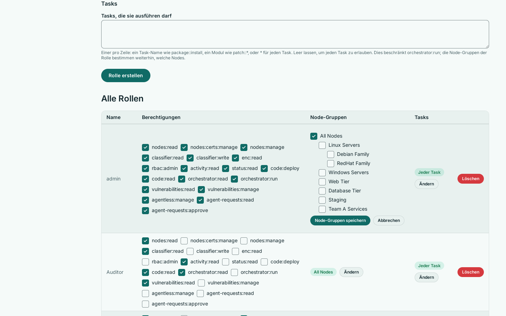

Nutzung
Benutzer, Rollen und Tokens
Gewähren Sie Personen Zugriff über Rollen und Berechtigungen, melden Sie sich über Ihren Identitätsanbieter an und stellen Sie Tokens für Programme aus.
Alles in der Konsole steht hinter einer Berechtigung, und jede Berechtigung erreicht eine Person über eine Rolle. Programme wie enc-bridge verwenden stattdessen Service-Tokens.
Die Verwaltung von Benutzern, Rollen und Tokens erfordert rbac:admin.
Die Berechtigungen
| Berechtigung | Erlaubt |
|---|---|
nodes:read |
Nodes, ihre Facts, Reports, Pakete, ausstehenden Updates und Zertifikatszustände ansehen |
nodes:manage |
Nodes löschen und festlegen, wie oft die Konsole nach ausstehenden Updates scannt |
nodes:certs:manage |
Zertifikate signieren, widerrufen und bereinigen – gleichbedeutend mit CA-Administratorzugriff |
classifier:read |
Node-Gruppen ansehen |
classifier:write |
Node-Gruppen erstellen, ändern und löschen |
enc:read |
Klassifizierung lesen, wie es openvoxserver tut |
code:read |
Repositories und Deploys ansehen |
code:deploy |
Deploys starten |
orchestrator:read |
Jobs ansehen |
orchestrator:run |
Jobs starten (Puppet-Läufe, Tasks, Pläne und Patch-Läufe), das Paketmelden eines Nodes umschalten und Nodes nach ausstehenden Updates scannen |
vulnerabilities:read |
Befunde zu Sicherheitslücken ansehen |
vulnerabilities:manage |
Anbieter für Sicherheitslücken konfigurieren |
agentless:manage |
agentenlose SSH-Ziele und gemeinsame Zugangsdaten hinzufügen, ändern und löschen und ihren Hostschlüsseln vertrauen |
activity:read |
das Aktivitätsprotokoll ansehen |
status:read |
die Seite „System“ ansehen |
agent-requests:read |
ansehen, was KI-Agenten zur Ausführung angefordert haben |
agent-requests:approve |
diese Anfragen genehmigen und ablehnen |
rbac:admin |
Benutzer, Rollen, Service-Tokens und Agent-Tokens verwalten |
Der Bootstrap-Administrator erhält jede Berechtigung. Eine in einer neueren Konsolenversion hinzugekommene Berechtigung wird bestehenden Rollen nie automatisch hinzugefügt. Gewähren Sie neue Berechtigungen nach einem Upgrade daher auf der Seite Rollen den Rollen, die sie haben sollen.
Jemandem Zugriff gewähren
- Öffnen Sie Verwaltung und dann Rollen, und erstellen Sie eine Rolle mit den Berechtigungen, die die Aufgabe erfordert – etwa
nodes:read,classifier:readundorchestrator:readfür jemanden, der beobachtet, aber nichts ändert. - Öffnen Sie Benutzer, erstellen Sie den Benutzer und weisen Sie ihm die Rolle zu.
Die Berechtigungen eines Benutzers sind die Kombination aller seiner Rollen. Um einem ganzen Team dieselben Rollen zu geben, verwenden Sie eine Benutzergruppe.
Passwörter und Sperre
Diese Regeln gelten für Konten, die sich mit Benutzername und Passwort anmelden. Sie gelten nicht für Personen, die sich über Ihren Identitätsanbieter anmelden, und nicht für Service-Tokens. Ein Administrator (rbac:admin) legt sie unter Verwaltung und dann Kontorichtlinie fest. Eine Änderung gilt sofort, auf jeder Konsoleninstanz.
Passwortregeln
| Regel | Ohne Änderung | Möglich |
|---|---|---|
| Mindestlänge | 12 Zeichen | 8 bis 72 |
| Muss einen Kleinbuchstaben, einen Großbuchstaben, eine Ziffer, ein Sonderzeichen enthalten | keine erforderlich | jeweils ein oder aus |
Zwei Regeln lassen sich nicht ausschalten: Ein Passwort darf nicht der Benutzername des Kontos sein und nicht länger als 72 Byte.
Ein Passwort wird geprüft, wenn es gesetzt wird: wenn ein Administrator einen Benutzer anlegt oder das Passwort eines Benutzers setzt und wenn jemand sein eigenes unter Einstellungen ändert. Jedes dieser Formulare listet die Regeln auf und markiert die, die ein abgelehntes Passwort nicht erfüllt hat.
Bereits vorhandene Passwörter werden nicht erneut geprüft. Nachdem Sie die Regeln verschärft haben, kann sich weiterhin jeder anmelden; die neuen Regeln gelten bei der nächsten Änderung des jeweiligen Passworts.
Sperre
Nach 10 fehlgeschlagenen Passwortanmeldungen in Folge wird ein Konto für 15 Minuten gesperrt. Beide Werte lassen sich ändern (3 bis 100 Anmeldungen; 1 bis 1.440 Minuten), und die Sperre kann ausgeschaltet werden.
- Solange ein Konto gesperrt ist, wird sein Passwort abgelehnt, selbst wenn es richtig ist. Fehlgeschlagene Anmeldungen während der Sperre verlängern sie nicht.
- Die Sperre endet von selbst. Eine erfolgreiche Anmeldung setzt den Zähler auf null zurück.
- Fehlgeschlagene Anmeldungen werden über alle Konsoleninstanzen hinweg gemeinsam gezählt.
- Die Anmeldeseite sagt nicht, dass ein Konto gesperrt ist. Sie gibt dieselbe Antwort wie bei einem falschen Passwort, denn „gesperrt“ würde einem Angreifer verraten, welche Benutzernamen existieren. Die Meldung bei jeder fehlgeschlagenen Anmeldung erwähnt, dass Konten nach wiederholten Versuchen gesperrt werden.
Die Sperre richtet sich gegen das Erraten von Passwörtern und stoppt daher nur die Passwortanmeldung:
- Bereits offene Sitzungen laufen weiter.
- Die Anmeldung über Ihren Identitätsanbieter funktioniert weiterhin.
- Service-Tokens sind nicht betroffen.
- Das Ändern Ihres eigenen Passworts verlangt das aktuelle. Ein falsches aktuelles Passwort zählt als fehlgeschlagene Anmeldung, und die Änderung wird abgelehnt, solange das Konto gesperrt ist.
Ein Konto entsperren
Öffnen Sie Verwaltung und dann Benutzer. Ein gesperrtes Konto zeigt Gesperrt bis und die Uhrzeit. Wählen Sie Entsperren oder Passwort setzen, um dem Benutzer ein neues Passwort zu geben, was das Konto ebenfalls entsperrt.
Ist der einzige Administrator ausgesperrt und kann niemand sonst das Konto entsperren, warten Sie, bis die Sperre endet. Damit niemand ein Konto durch absichtlich fehlschlagende Anmeldungen gesperrt halten kann, stellen Sie die Konsole hinter etwas, das Anfragen an /api/v1/auth/login begrenzt, oder schalten Sie die Sperre aus und verlassen Sie sich stattdessen darauf.
Sperren, Entsperrungen, abgelehnte Passwörter und Änderungen an der Richtlinie werden ins Audit-Protokoll geschrieben; Sperren, Entsperrungen und Richtlinienänderungen erscheinen außerdem auf der Seite Aktivität.
Einer Gruppe Rollen geben
Eine Benutzergruppe ist eine benannte Menge von Benutzern. Einer Gruppe gewährte Rollen hält jedes Mitglied zusätzlich zu den Rollen, die es selbst hat. Ändert sich ein Team, ändern Sie also die Gruppe statt jedes einzelnen Kontos.
- Öffnen Sie Verwaltung und dann Benutzergruppen, geben Sie der Gruppe einen Namen und wählen Sie Gruppe erstellen.
- Wählen Sie unter Mitglieder Ändern und haken Sie die Benutzer an, die dazugehören.
- Haken Sie in der Spalte Rollen die Rollen an, die die Gruppe vergeben soll.
Eine Person, die mehreren Gruppen angehört oder eine Rolle sowohl selbst als auch über eine Gruppe hält, hat sie einmal. Wird der Person die Rolle entzogen, bleibt die Gewährung der Gruppe bestehen, und wird sie aus der Gruppe entfernt, bleibt, was sie selbst hält.
Die Seite Benutzer zeigt die Gruppen jeder Person und die Rollen, die sie darüber hält, etwa „Patcher via Web ops“. Diese können dort nicht abgehakt werden: Ändern Sie die Gruppe. Die Seite Rollen zeigt die Gruppen, denen jede Rolle gewährt ist.
Gruppen und Grenzen
Eine Gruppe fügt Rollen hinzu; sie verschmilzt sie nicht. Jede Rolle gilt weiterhin auf ihren eigenen Node-Gruppen und, falls vorhanden, mit ihrer eigenen Task-Liste, wie bei Rollen, die einer Person direkt zugewiesen sind. Jemand in einer Gruppe, die eine auf patch::* auf den Webservern beschränkte Rolle gewährt, und dem zusätzlich eine Rolle zugewiesen ist, die jeden Task auf den Datenbankservern erlaubt, kann Patch-Tasks auf den Webservern und beliebige Tasks auf den Datenbankservern ausführen.
Löschen und Entfernen
- Das Löschen einer Gruppe entzieht ihren Mitgliedern deren Rollen. Hat sie Mitglieder, nennt die Konsole vor dem Löschen, wie viele Personen betroffen sind.
- Das Löschen eines Benutzers entfernt ihn aus seinen Gruppen, und das Löschen einer Rolle entfernt sie aus den Gruppen, die sie halten.
- Die Konsole löscht keine Gruppe, entzieht ihr keine Rolle und entfernt kein Mitglied, wenn danach niemand mehr
rbac:adminhätte.
Wann eine Änderung wirksam wird
Das Beitreten zu oder Verlassen einer Gruppe sowie das Gewähren oder Entziehen der Rollen einer Gruppe werden bei der nächsten Aktualisierung der Sitzung der Person wirksam, innerhalb von 15 Minuten, wie jede Rollenänderung. Ein geplanter Job wird bei jeder Auslösung gegen die Gruppen seines Besitzers geprüft.
Jede Änderung an einer Gruppe, ihren Mitgliedern und ihren Rollen wird unter der Kategorie rbac ins Audit-Protokoll geschrieben.
Eine Rolle auf einige Ihrer Nodes beschränken
Die Berechtigungen einer Rolle gelten für Node-Gruppen. Eine neue Rolle wird auf All Nodes gewährt, also der gesamten Flotte. Um ein Team auf seine eigenen Server zu beschränken, gewähren Sie die Rolle stattdessen auf der Gruppe dieses Teams:
- Stellen Sie sicher, dass eine Node-Gruppe genau die Nodes enthält, die das Team sehen soll – siehe Nodes klassifizieren.
- Öffnen Sie Verwaltung und dann Rollen.
- Wählen Sie in der Spalte Node-Gruppen der Rolle Ändern, entfernen Sie den Haken bei All Nodes und haken Sie die Gruppe des Teams an.
- Wählen Sie Node-Gruppen speichern.


Eine Gewährung auf einer Gruppe deckt jede Gruppe darunter ab, sodass eine Rolle auf Linux Servers auch die Nodes in Debian Family sieht. Die Mitglieder der Rolle erhalten die Änderung bei der nächsten Aktualisierung ihrer Sitzung, innerhalb von 15 Minuten; ein Node, der in die Gruppe hinein- oder aus ihr herauswandert, erscheint oder verschwindet innerhalb einer Minute.
Wer so beschränkt ist, sieht überall, wo Node-Daten erscheinen, nur seine Nodes: die Node-Liste und die Facts, Reports, Pakete und Sicherheitslücken jedes Nodes, die Zahlen auf dem Dashboard, den Paketkatalog, die Liste der Sicherheitslücken, die Seite Jobs und die Node-Zahlen auf den Seiten Gruppen und Code. Ein Node außerhalb seiner Gruppen antwortet genau wie ein Node, der nicht existiert. Die Seite Nodes nennt, welche Gruppen angezeigt werden.
Dieselben Gruppen begrenzen, was sie tun können. Puppet, einen Task oder einen Plan auszuführen, das Paketmelden eines Nodes umzuschalten, seinen Agenten zu aktualisieren, ihn zu löschen sowie sein Zertifikat zu signieren, zu widerrufen oder zu bereinigen – all das erfordert, dass der Node in den Gruppen einer Rolle liegt, die diese Berechtigung gewährt. Eine Aktion, die einen Node außerhalb davon nennt, wird abgelehnt, und die Konsole sagt, welche Nodes das waren. Nennt eine Aktion mehrere Nodes und liegt einer außerhalb, wird auf keinem davon etwas getan.
Die Nodes eines Jobs können auch über eine Abfrage oder eine Node-Gruppe statt per Namen gewählt werden – siehe Jobs ausführen. Diese werden eingeengt statt abgelehnt: Wer auf einige Node-Gruppen beschränkt ist, erhält die passenden Nodes, die in seinen Gruppen liegen, und erfährt nichts über den Rest. Seine Abfragen dürfen keine Unterabfrage enthalten, mit der sich sonst etwas über Nodes außerhalb seiner Gruppen herausfinden ließe.
Ein geplanter Job läuft als sein Besitzer, mit dessen Rollen in dem Zustand, den sie bei jedem Start haben. Wird jemandem eine Rolle entzogen, starten seine Zeitpläne nichts mehr; wird sie eingeschränkt, wird auch eingeschränkt, worauf seine Zeitpläne laufen. Personen sehen und ändern ihre eigenen Zeitpläne, und nur eine auf All Nodes gewährte Rolle sieht und ändert die aller.
Mehr sehen, als Sie ändern können
Jede Berechtigung ist durch die Rollen begrenzt, die sie gewähren, sodass Sehen und Handeln auseinanderfallen können. Damit ein Team die gesamte Flotte sehen, Puppet aber nur auf seinen eigenen Servern ausführen kann, geben Sie seinen Mitgliedern zwei Rollen:
| Rolle | Berechtigungen | Node-Gruppen |
|---|---|---|
| Flottenleser | nodes:read, classifier:read, orchestrator:read |
All Nodes |
| Web-Operatoren | orchestrator:run |
Web Servers |
Sie sehen jeden Node und jeden Job, und ein Lauf auf einem Datenbankserver wird abgelehnt.
Was Node-Gruppen nicht begrenzen
- Die Seite „Aktivität“. Sie ist das Audit-Protokoll und nennt jeden Node. Geben Sie
activity:readnur Personen, die über die gesamte Flotte Bescheid wissen dürfen. - Definitionen von Node-Gruppen. Jeder mit
classifier:readsieht jede Gruppe, einschließlich der ihr fest zugewiesenen Node-Namen, undclassifier:writekann jede Gruppe ändern. - Service-Tokens, die immer flottenweit gelten. Sie können wie eine Rolle auf einige Tasks beschränkt werden – siehe Ein Token für ein Programm ausstellen.
- Gespeicherte Pläne. Jeder mit
orchestrator:readsieht jeden Plan, und jeder mitorchestrator:runkann jeden davon ändern. Ausführen lässt sich einer nur auf Ihren Nodes. - Code-Deploys, die keinen Node betreffen.
Gut zu wissen
- Ein Node, der noch nie Puppet ausgeführt hat, hat keine Facts und trifft daher auf die Regel keiner Gruppe zu. Er ist nur dann in den Gruppen eines Teams, wenn er einer davon fest zugewiesen ist. Das gilt auch für Nodes, die darauf warten, dass ihr Zertifikat signiert wird – siehe Node-Zertifikate verwalten.
- Eine Rolle ganz ohne Node-Gruppen zeigt die Warnung Keine Node-Gruppen. Ihre Berechtigungen gelten für keinen Node.
- Der Job-Verlauf folgt den aktuellen Gruppen eines Nodes. Wechselt ein Node in eine andere Gruppe, verschwinden seine früheren Jobs mit ihm aus der Ansicht der alten Gruppe.
Eine Rolle auf einige Tasks beschränken
orchestrator:run allein erlaubt es, jeden Task, den die Konsole kennt, auf den Nodes auszuführen, die die Rolle abdeckt. Damit ein Team die Patch-Tasks ausführen kann und sonst nichts, geben Sie seiner Rolle eine Task-Allowlist:
- Öffnen Sie Verwaltung und dann Rollen.
- Wählen Sie in der Spalte Tasks der Rolle Ändern.
- Geben Sie ein Muster pro Zeile ein und wählen Sie dann Tasks speichern. Das Formular Neue Rolle hat dasselbe Feld.
Ein Muster ist eines von:
| Muster | Erlaubt |
|---|---|
package::install |
nur dieser Task |
patch::* |
jeder Task im Modul patch sowie der eigene Task des Moduls, patch |
* |
jeder Task |
Der Abgleich ist exakt und unterscheidet Groß- und Kleinschreibung, daher erlaubt patch::* nicht patching::apply. Sonst wird nichts akzeptiert: Ein Muster mit einem Platzhalter an anderer Stelle, eine leere Zeile oder ein Großbuchstabe wird abgelehnt, und das Formular behält, was Sie eingegeben haben. Eine Rolle kann bis zu 20 Muster mit jeweils bis zu 64 Zeichen enthalten.
Eine Rolle ohne Muster erlaubt jeden Task. So bleiben alle Rollen, die Sie bereits haben, sodass sich nichts ändert, bis Sie eines hinzufügen. Die Liste schränkt nur orchestrator:run ein: Sie gewährt nie etwas, und die Node-Gruppen der Rolle entscheiden weiterhin über die Nodes.
Wie sich die Rollen einer Person kombinieren
Die Liste jeder Rolle gilt auf den eigenen Node-Gruppen dieser Rolle, nicht auf allen Gruppen der Person. Jemand mit diesen beiden Rollen:
| Rolle | Node-Gruppen | Tasks |
|---|---|---|
| Web-Patcher | Web Servers | patch::* |
| Datenbank-Operatoren | Database Servers | (jeder Task) |
kann patch::apply auf einem Webserver und jeden Task auf einem Datenbankserver ausführen, und ein Task wie package::install wird auf einem Webserver abgelehnt. Die zweite Rolle erweitert die erste nicht.
Wird ein Task auf Nodes gestartet, die über eine Abfrage oder Node-Gruppe gewählt wurden, läuft er auf den passenden Nodes, auf denen die Person ihn ausführen darf, und erfährt nichts über den Rest, wie bei Node-Gruppen. Ein Plan wird auf die Nodes eingeengt, auf denen jeder seiner Task-Schritte laufen darf, sodass alle seine Schritte weiterhin auf denselben Nodes laufen. Eine Liste benannter Nodes, die einen Node enthält, auf dem der Task nicht erlaubt ist, wird mit Nennung dieses Nodes abgelehnt.
Wie eine Ablehnung aussieht
Der Start eines Tasks, den die Rollen der Person nicht erlauben, wird mit 403 und dem Namen des Tasks abgelehnt; nichts wird gestartet. Bei einem Plan wird zusätzlich der Schritt genannt, als step 2 (package::install). Ein nicht existierender Task und einer, den die Person nicht ausführen darf, werden gleich abgelehnt, sodass die Liste nicht verrät, welche Tasks existieren. Jede Ablehnung steht im Audit-Protokoll als task.denied, mit Person, Task und Schritt, aber nie mit den Parametern des Tasks.
Was die Liste nicht begrenzt:
- Puppet-Läufe, die keine Tasks sind.
- Jobs und ihren Verlauf sehen. Sie begrenzt, was jemand starten darf.
- Personen, die nur lesen dürfen. Jemand mit
orchestrator:readund ohneorchestrator:runsieht jeden Task in der Task-Liste.
Der Dialog Task ausführen, der Plan-Editor und das Zeitplanformular bieten nur die Tasks an, die die Person ausführen darf.
Pläne und Zeitpläne
- Das Speichern eines Plans oder eines Zeitplans mit einem Task, den die Person nicht ausführen darf, wird abgelehnt, mit Nennung des Schritts und des Tasks.
- Ein Plan, den jemand anderes gespeichert hat, zeigt einer Person mit engerer Liste jeden Schritt, wobei die Schritte markiert sind, die sie nicht ausführen darf. Sie kann ihn nicht ausführen und keine Änderungen daran speichern, ohne diese Schritte zu entfernen.
- Ein Zeitplan wird bei jedem Start geprüft, gegen die Rollen seines Besitzers, wie sie zu diesem Zeitpunkt sind. Darf der Besitzer einen seiner Tasks nicht mehr ausführen, startet nichts, und die Auslösung wird als übersprungen verzeichnet, mit Nennung des Tasks (und bei einem Plan des Schritts).
Wann eine Änderung wirksam wird
Die Liste einer Rolle erreicht die Sitzungen einer Person bei deren nächster Aktualisierung, innerhalb von 15 Minuten, wie jede andere Berechtigung. Ein Zeitplan übernimmt sie bei seinem nächsten Start.
Die Task-Listen einer Person reisen in ihrem Access-Token mit. Die obigen Grenzen halten eine Rolle bei höchstens etwa 1,3 KB, und die meisten Personen tragen nur wenige kurze Muster. Geben Sie jemandem viele eingeschränkte Rollen, prüfen Sie, ob der Reverse Proxy vor der Konsole so große Request-Header akzeptiert; manche erlauben nur 8 KB.
Über Ihren Identitätsanbieter anmelden
Die Konsole kann Personen auch über OpenID Connect anmelden. Lokale Anmeldung und Service-Tokens funktionieren daneben weiter. Registrieren Sie die Konsole bei Ihrem Anbieter mit der Redirect-URL https://console.example.com/api/v1/auth/oidc/callback und setzen Sie:
| Einstellung | Was es ist |
|---|---|
CONSOLE_OIDC_ISSUER |
die Issuer-URL Ihres Anbieters |
CONSOLE_OIDC_CLIENT_ID, CONSOLE_OIDC_CLIENT_SECRET |
die Registrierung der Konsole |
CONSOLE_OIDC_REDIRECT_URL |
die oben genannte Redirect-URL |
CONSOLE_OIDC_SCOPES |
standardmäßig openid profile email groups |
CONSOLE_OIDC_USERNAME_CLAIM |
der Claim, aus dem der Name eines neuen Benutzers stammt; standardmäßig email |
CONSOLE_OIDC_ROLE_CLAIM |
der Claim, der die Gruppen einer Person auflistet; standardmäßig groups |
CONSOLE_OIDC_ROLE_MAPPING |
ein JSON-Objekt, das Claim-Werte auf Rollennamen abbildet, etwa {"platform-admins":"admin"}; jede Rolle muss bereits existieren, und nicht zugeordnete Werte werden ignoriert |
Die Anmeldeseite bietet dann Mit SSO anmelden an. Bei jeder Anmeldung gibt die Konsole der Person die zugeordneten Rollen, die ihre Claims aktuell nennen, und entfernt zugeordnete Rollen, die sie nicht mehr nennen. Eine Rolle, die ein Administrator von Hand zugewiesen hat, bleibt immer unberührt.
Ihr Anbieter muss die Benutzernamen- und Gruppen-Claims in das ID-Token selbst schreiben, nicht nur hinter seinen User-Info-Endpunkt. Manche Anbieter lassen sie standardmäßig aus dem ID-Token weg, wenn sie auch ein Access-Token ausstellen, und brauchen eine Einstellung, um sie aufzunehmen.
Ein Token für ein Programm ausstellen
Ein Service-Token hat einen festen Satz von Berechtigungen, die bei seiner Erstellung gewählt werden, und läuft nie von selbst ab. Geben Sie jedem Programm sein eigenes, mit nur dem, was es braucht:
- Öffnen Sie Verwaltung und dann Service-Tokens.
- Benennen Sie es unter Neues Service-Token und wählen Sie seine Berechtigungen.
- Listen Sie optional unter Tasks, die sie ausführen darf die Tasks auf, die es starten darf, ein Muster pro Zeile, wie bei einer Rolle. Lassen Sie das Feld leer, um jeden Task zu erlauben. Die Liste wird bei der Erstellung des Tokens festgelegt.
- Wählen Sie Service-Token erstellen und kopieren Sie das Token: Es wird nur einmal angezeigt.
Das Löschen eines Service-Tokens widerruft es sofort auf jeder Konsoleninstanz. Das Abmelden widerruft die Tokens dieser Sitzung auf dieselbe Weise.
Um einem KI-Agenten Zugriff zu geben, verwenden Sie stattdessen ein Agent-Token: Es läuft ab, ist auf Node-Gruppen beschränkt, und jede Änderung, die es anfordert, wartet auf die Genehmigung einer Person. Siehe KI-Agenten die Konsole nutzen lassen.
Ein Audit-Protokoll führen
Jede über die Konsole vorgenommene Änderung steht auf der Seite Aktivität, für die activity:read nötig ist. Unabhängig davon kann die Konsole ein Audit-Protokoll für einen Log-Collector schreiben, mit einer Stufe pro Kategorie:
| Einstellung | Kategorie |
|---|---|
CONSOLE_AUDIT_NODES |
Nodes und Zertifikate |
CONSOLE_AUDIT_CLASSIFIER |
Node-Gruppen |
CONSOLE_AUDIT_RBAC |
Benutzer, Benutzergruppen, Rollen und Tokens |
CONSOLE_AUDIT_AUTH |
An- und Abmeldungen |
CONSOLE_AUDIT_CODE |
Code-Deploys |
CONSOLE_AUDIT_ORCHESTRATOR |
Jobs sowie Tasks, die jemandem verweigert wurden, dessen Rollen sie nicht erlauben |
CONSOLE_AUDIT_VULNERABILITIES |
Anbieter für Sicherheitslücken |
Jede ist off, writes (der Standard: Änderungen und Anmeldungen) oder full (zusätzlich jede Ansicht). Audit-Ereignisse gehen in die eigene Log-Ausgabe der Konsole, sofern CONSOLE_AUDIT_LOG_PATH keine Datei angibt.